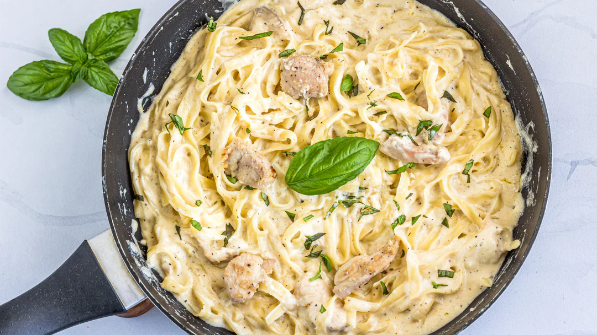

Prep Time: 10 minutes
Cook Time: 30 minutes
Total Time: 40 minutes
Serves: 4
Step 1
Bring a large pot of water to boil, and add in a generous amount of salt. Add in your fettuccine pasta until it is al dente (firm to the tooth--namely, tender but still slightly firm).Step 2
While your pasta is cooking, heat a large skillet over medium heat. Add half a stick of butter, let it melt but do not let it burn or brown (keep it moving if you have to). Once your butter has melted, add in your heavy cream and stir.Step 3
Then you want to add your minced garlic and your white wine and stir. Wait a minute and add a cup of parmesan cheese, your Loubier Gourmet Italian Topper Seasoning, and your al dente fettuccine. Mix wellStep 4
Bring your heat down to low heat, and add in the rest of your ingredients. We started with our cut chicken thighs (which we cooked with some olive oil, Loubier Gourmet Italian Topper Seasoning, and some white wine), and then added some parsley and crushed red peppers.Step 5
Mix them all together, add salt & pepper to taste, serve, and enjoy